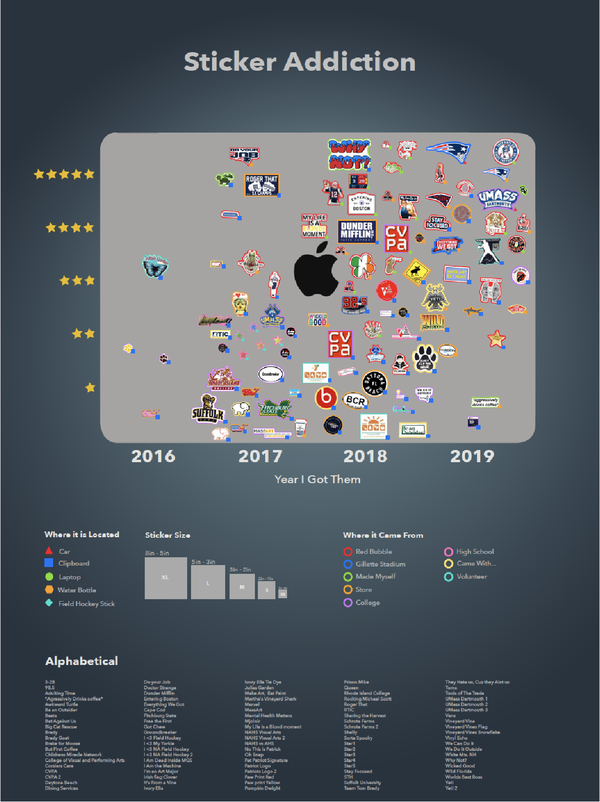
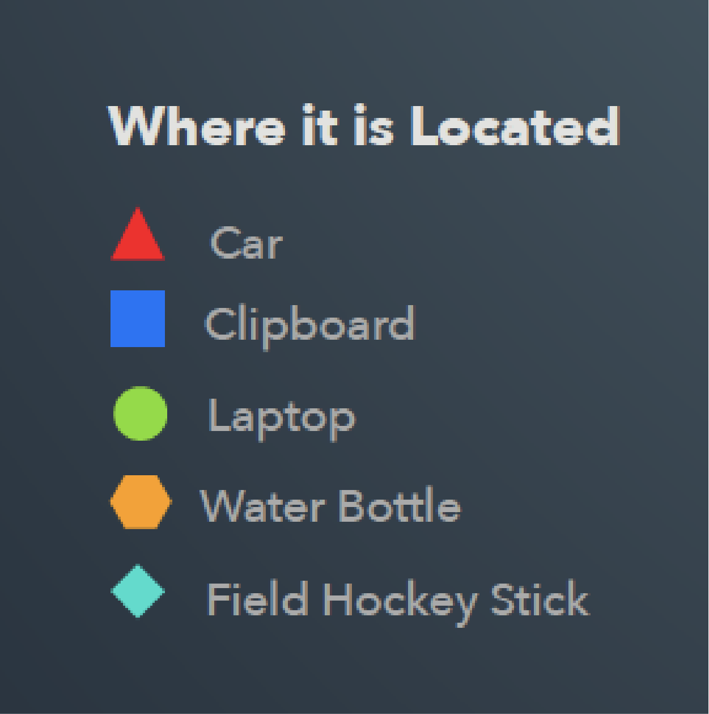
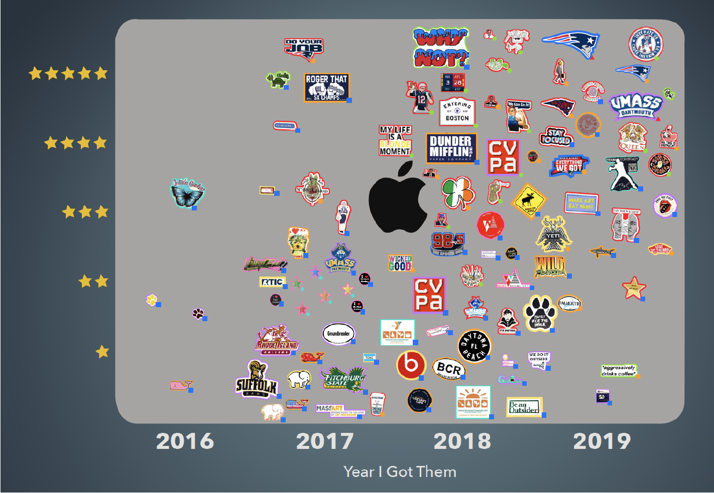
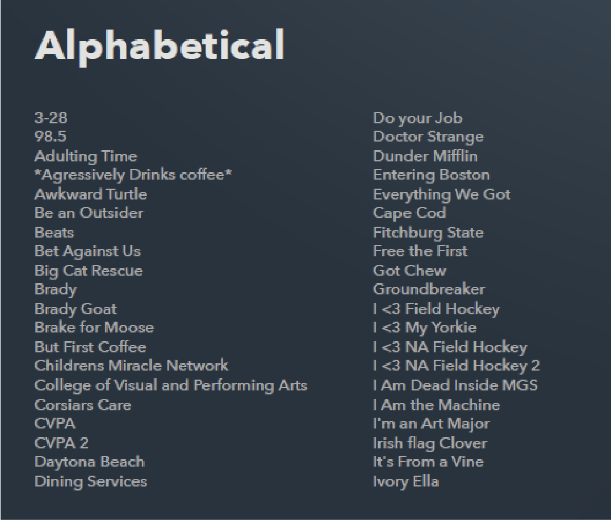

Sticker Addiction.
100 Stickers that I own beeing organized in
all 7 main ways all on one chart. They fall into
the categories of where I got them, when I got
them, what size they are, what they look like,
how much I like them, what the object they
are currently on is, and alphabetically all on this
one poster. I portrayed this through shapes,
color, a chart, theyre size, and an alphabetical list.